Punto y Fama · Botillería y market. Cómo vender, abrir y cerrar la caja, y revisar lo vendido cada día.
Las primeras secciones son para todos los que atienden. Las que llevan la marca solo el dueño necesitan el PIN de administrador.
El sistema tiene dos cajas que trabajan a la vez y comparten los mismos productos, precios y ventas.
Guarda todos los datos: productos, ventas, usuarios y cierres. Tiene que estar encendido para que la otra caja pueda vender.
Trabaja con los datos de la Caja 1, a través del cable que las une. Lo que se vende en una se ve al instante en la otra.
Los dos computadores abren el programa solos al encenderse. Si la Caja 2 enciende primero, espera a la Caja 1 con un aviso en pantalla. No necesita internet.
Cada persona que atiende tiene su propio usuario y su propia clave (PIN). Así el sistema sabe quién vendió cada cosa.
| Tarea | Cajero | Dueño (administrador) |
|---|---|---|
| Vender, cobrar y consultar precios | Sí | Sí |
| Abrir y cerrar su caja | Sí | Sí, también la de la otra caja |
| Anotar un pago a proveedor o un ingreso de sencillo | Sí | Sí |
| Anotar un retiro de plata | No | Sí, con su PIN |
| Ver cuánto debería haber en el cajón | No | Sí |
| Cierre de caja y ventas del día | No | Sí |
| Productos, precios y empleados | No | Sí |
La clave es personal. Quien presta la suya firma las ventas y los movimientos de plata del otro. Si alguien la olvida, el dueño le genera una nueva en un minuto (sección 12).
Esta página resume todo el manual. Si solo va a leer una, que sea esta.
Quien cierra escribe lo que contó sin ver cuánto debería haber. Es a propósito: así nadie cuenta "hasta que dé". El dueño ve la diferencia con su PIN.
Normalmente el programa ya está abierto al encender el computador. Si no, haga doble clic en el icono Punto y Fama del escritorio.
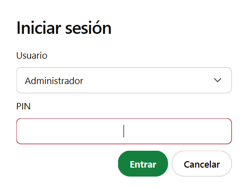
Al pie de la barra lateral aparece siempre quién está atendiendo y en qué caja. Mírelo antes de empezar a vender.
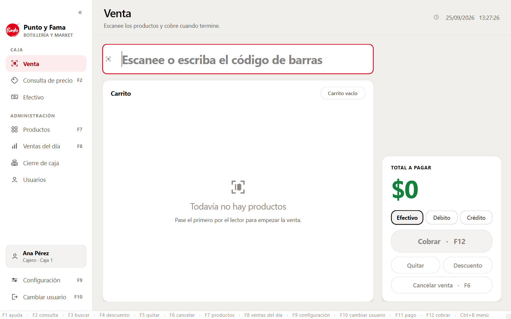
| Zona | Para qué sirve |
|---|---|
| Barra lateral, a la izquierda | Lleva a cada pantalla. La sección Caja es para todos y Administración es para el dueño. Al pie, quién atiende y en qué caja. |
| Campo de código, arriba | Donde entra lo que se escanea. El cursor vuelve ahí solo después de cada acción. |
| Panel derecho | El total, cómo se paga y los botones para cobrar, quitar, descontar o cancelar. |
| Franja de abajo | Los atajos de teclado, siempre a la vista. |
Abrir la caja es decirle al sistema con cuánta plata parte el cajón. Se hace una vez al día, en cada caja, antes de la primera venta.
Desde ese momento la caja está abierta y se puede vender. En Efectivo se ve arriba "Caja 1 abierta", desde qué hora, quién la abrió y con cuánto.
Cada caja se abre y se cierra por su cuenta: la Caja 1 y la Caja 2 tienen cada una su cajón. Durante el día pueden entrar y salir varios empleados en la misma caja abierta, cada uno con su clave. No hace falta cerrarla para cambiar de persona.
Aparece al intentar cobrar sin haberla abierto. La venta no se pierde: abra la caja en el aviso que aparece y cobre a continuación.
Lo fija el dueño (sección 11). Sirve para dejar preparado el cajón con el mismo sencillo todas las mañanas. Aunque exista, quien abre siempre escribe lo que contó.
Una venta normal no necesita el mouse: se escanea, se marca cómo paga y se cobra.
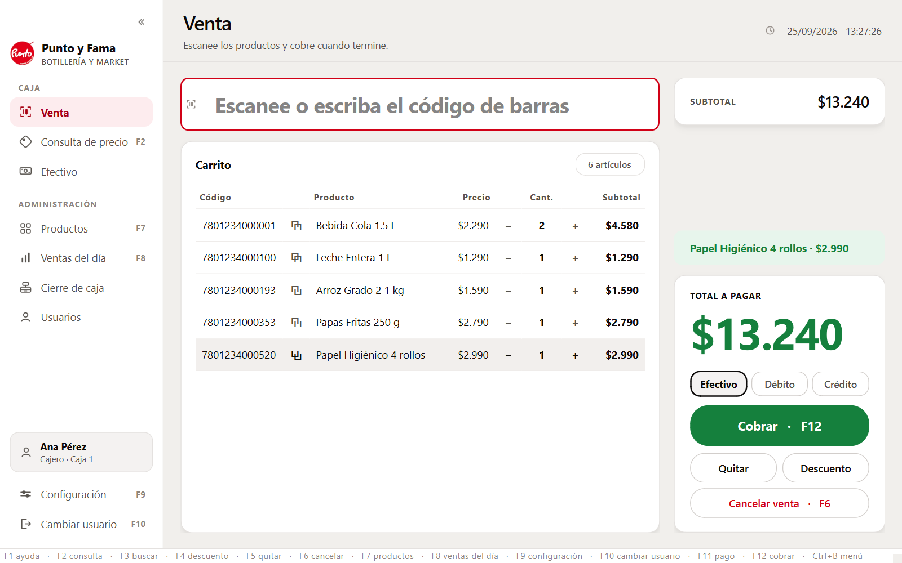
Marque débito o crédito antes de cobrar. Una venta con tarjeta cobrada como efectivo hace que al cerrar la caja parezca que falta plata.
El sistema no calcula el vuelto ni imprime boleta. El vuelto se da como siempre; el cajón cuadra igual, porque lo que entra es el total de la venta.
Todo se puede corregir antes de cobrar. Una vez cobrada, la venta queda registrada tal como se hizo.
Use el + o el − de la línea, o seleccione la línea y use las flechas → para sumar y ← para restar. Con ↑ y ↓ se mueve entre líneas.
Seleccione la línea y pulse F5, o el botón Quitar. Quita una unidad; si era la última, desaparece la línea.
Pulse F6 o Cancelar venta. El programa pide confirmación antes de vaciar el carrito.
Si un producto no tiene código legible, pulse F3, escriba parte del nombre y elíjalo en la lista.
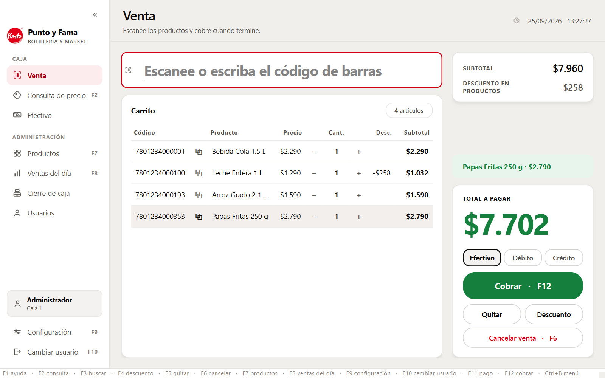
Pulse F4 o Descuento. Se eligen dos cosas:
Los dos se pueden combinar. Un descuento nunca deja el total bajo cero, y si cambian las cantidades, el porcentaje se recalcula solo.
Para responder "¿cuánto cuesta esto?" sin tocar la venta que está armando.
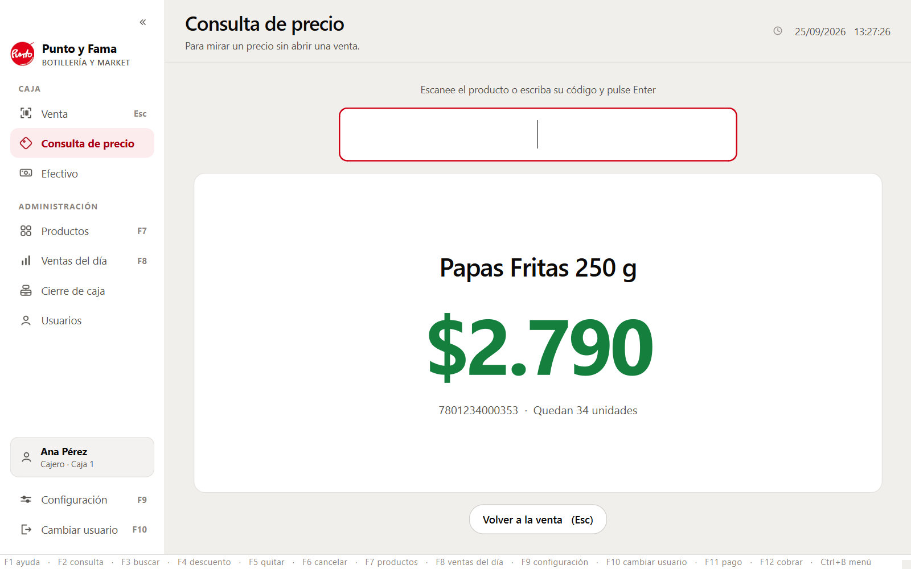
Consultar no agrega nada al carrito. La pantalla se limpia sola a los 15 segundos.
Si se escanea algo que no está cargado en el sistema, aparece este aviso.
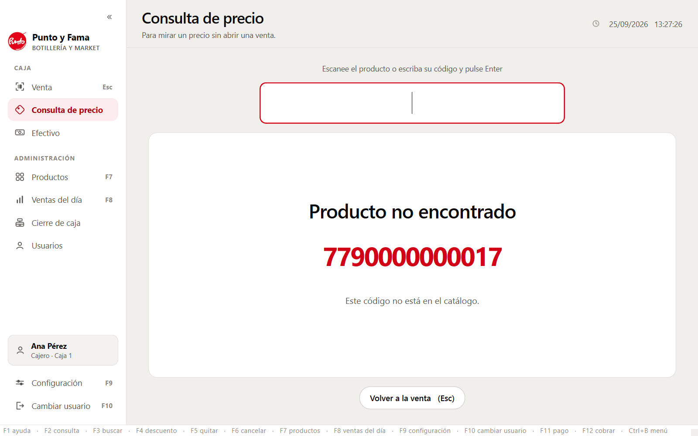
Si el producto existe pero el código no se lee, pulse Buscar por nombre (F3) y elíjalo de la lista.
Si el producto no está cargado, no hace falta anotarlo en un papel: el sistema guarda el código en una lista de pendientes, y el dueño lo carga después (sección 13).
Todo lo que sale o entra del cajón sin ser una venta se anota en Efectivo, en la barra lateral, en el momento en que pasa.
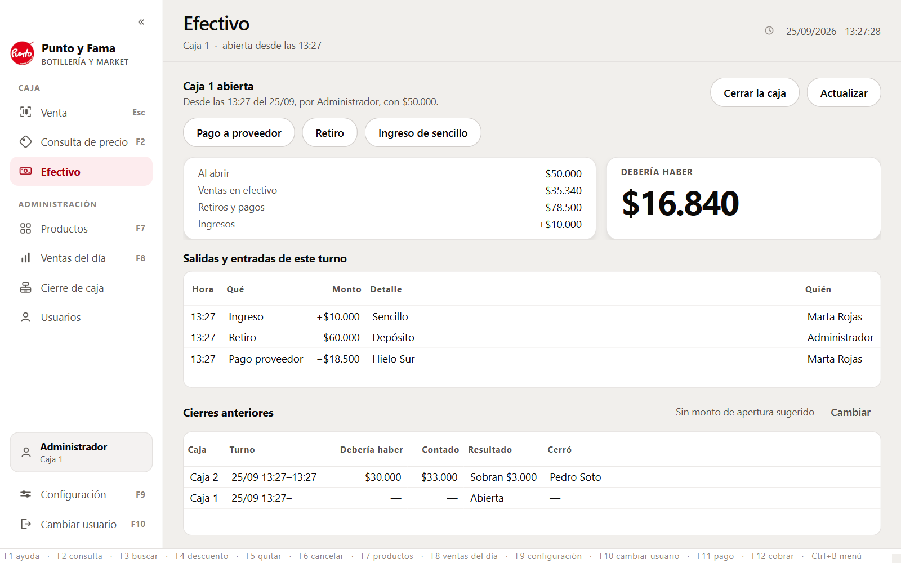
| Botón | Cuándo se usa | Quién |
|---|---|---|
| Retiro | El dueño saca plata del cajón, por ejemplo para depositar. | Solo el dueño: pide su PIN. |
| Pago a proveedor | Se le paga en efectivo a un proveedor con plata de la caja. Pide el nombre del proveedor. | Cualquier empleado. Queda a su nombre. |
| Ingreso de sencillo | Se agrega plata al cajón, por ejemplo monedas para dar vuelto. | Cualquier empleado. |
Lo anotado no se borra, ni por error: queda con la hora y el nombre de quién lo hizo. Si se equivocó en un monto, anote el movimiento contrario (por ejemplo, un ingreso por la diferencia) y dígaselo al dueño.
Al terminar el día, cada caja se cierra contando la plata del cajón. Es lo que permite saber si la caja cuadró.
Quien cierra no ve cuánto debería haber, y tampoco la diferencia. No es un error del programa: así el conteo es honesto. El dueño ve después, con su PIN, cuánto debía haber, cuánto se contó y si sobró o faltó.
| Plata con que se abrió la caja | $50.000 |
| + Ventas en efectivo del día | $35.340 |
| + Ingresos de sencillo | $10.000 |
| − Retiros y pagos a proveedores | −$78.500 |
| = Debería haber en el cajón | $16.840 |
Las ventas con débito y crédito no entran en la cuenta: esa plata no pasa por el cajón. Montos de ejemplo.
Lo vendido en una caja durante un día: el total, separado por forma de pago y por empleado, con cada venta y sus productos.
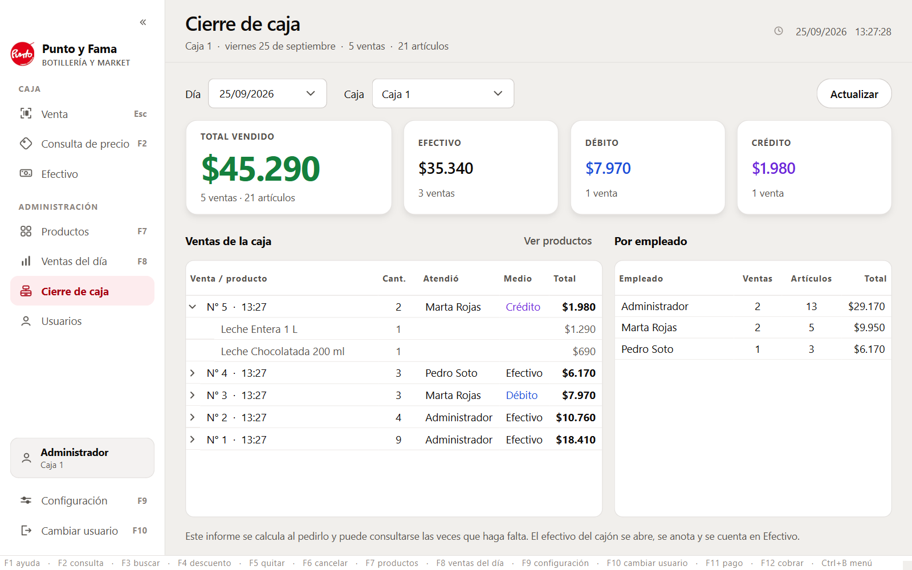
En Efectivo, el dueño ve lo que el cajero no ve: cuánto debería haber y cómo terminaron los cierres.
Si entró como administrador, lo ve directamente. Si está atendiendo un cajero, pulse Ver las cuentas y escriba su PIN: el cajero sigue en su sesión, y las cuentas se ocultan al salir de la pantalla.
Abajo, en Efectivo, cada cierre de las dos cajas: cuánto debía haber, cuánto se contó, si sobró o faltó y quién cerró. Una caja que sigue abierta aparece como "Abierta".
En Cierres anteriores, pulse Cambiar y escriba con cuánto quiere que parta cada caja. Ese monto se propone cada mañana al abrir.
Cuando saque plata de una caja, anótelo con Retiro en ese momento, con su PIN. Así el cierre da cifras exactas.
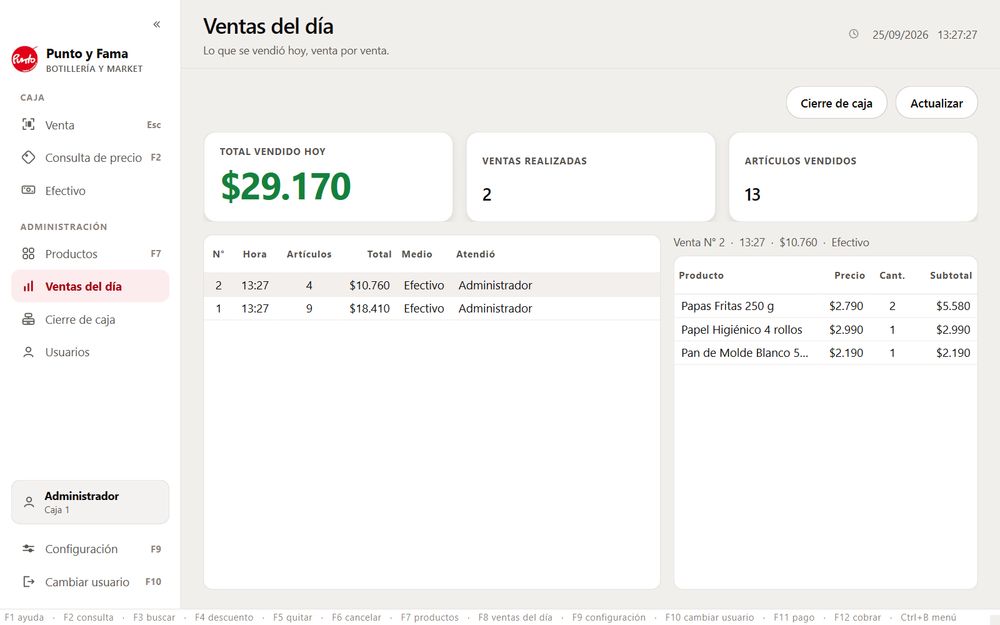
Pulse F8. Muestra lo vendido hoy entre las dos cajas: el total, cuántas ventas y cuántos artículos.
Al elegir una venta, a la derecha se ve lo que llevaba. Para el detalle de una sola caja, use el cierre de caja.
En Usuarios, en la barra lateral, se da de alta a cada persona que atiende.
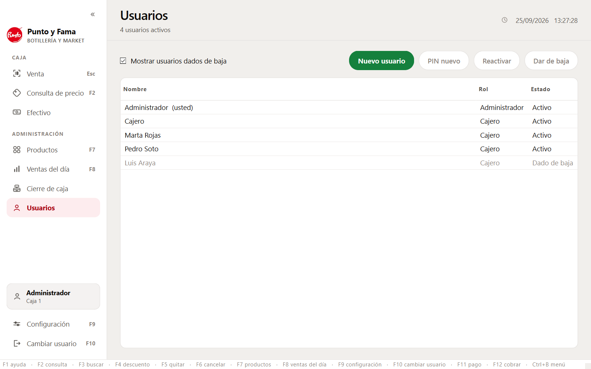
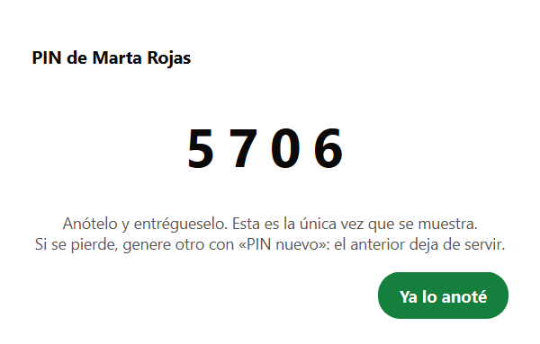
| Botón | Qué hace |
|---|---|
| Nuevo usuario | Alta de un empleado. El sistema inventa su PIN. |
| PIN nuevo | Para quien olvidó el suyo. El anterior deja de servir. |
| Dar de baja | Quien ya no trabaja deja de poder entrar. Sus ventas se conservan. |
| Reactivar | Para quien vuelve. |
Cuando el sistema genera un PIN, lo enseña en pantalla una única vez. Que el empleado lo anote en ese momento. Si lo pierde, se le genera otro con PIN nuevo.
Si el dueño olvida su propio PIN, se recupera en la Caja 1 con ayuda de soporte (sección 16). El sistema no deja dar de baja al último administrador ni a uno mismo.
Pulse F7. Si está atendiendo un cajero, el programa pide el PIN del dueño, sin cambiar quién está en la caja.
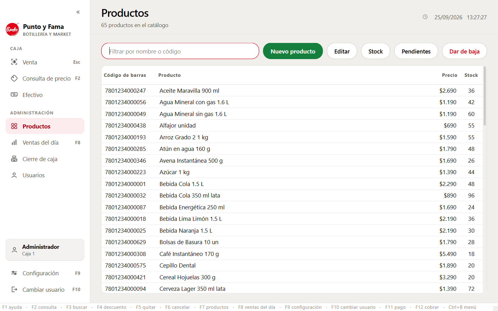
| Acción | Cómo |
|---|---|
| Buscar | Escriba parte del nombre o del código en el filtro. |
| Nuevo producto | Lo más cómodo es escanear el código dentro del formulario. Luego el nombre, el precio y el stock. |
| Cambiar un precio | Editar, o doble clic en el producto. El precio nuevo se ve al instante en las dos cajas. Las ventas pasadas conservan el precio al que se vendieron. |
| Dar de baja | El producto deja de venderse, pero no se borra: las ventas antiguas siguen correctas. |
| Códigos pendientes | Los códigos que se escanearon en la caja y no están cargados, ordenados por cuántas veces se intentaron. |
El stock baja solo con cada venta. Si al contar la mercadería no coincide, corríjalo editando el producto.
Pulse F9, o Configuración al pie de la barra lateral. Los ajustes se guardan en cada computador.
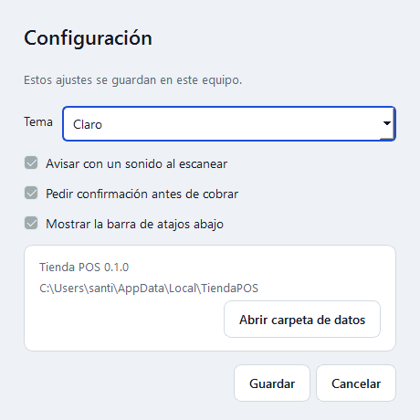
| Ajuste | Para qué sirve |
|---|---|
| Tamaño de letra | Normal, Grande o Muy grande. Se ve al instante. |
| Tema | Claro u Oscuro, para poca luz o turnos de noche. |
| Sonido al escanear | El pitido que confirma que el producto entró. |
| Confirmar antes de cobrar | Si se apaga, F12 cobra de inmediato. Más rápido, pero sin segunda oportunidad. |
| Barra de atajos | La franja de teclas al pie de la pantalla. |
| Animaciones | Los destellos y fundidos. Apáguelas si el equipo va lento. |
Cuando cambia la persona que atiende, pulse F10 y entra la siguiente con su PIN. La caja sigue abierta. Si hay una venta a medio armar, el programa avisa antes: cambiar de persona con el carrito lleno es la forma más fácil de cobrarle a alguien lo que llevaba otro.
Con Ctrl+B, o la flecha doble de arriba, la barra se recoge y deja solo los iconos. Con la misma tecla vuelve.
Con estas teclas se trabaja sin tocar el mouse. F1 muestra esta lista dentro del programa.
Funciona como un teclado: no hay que configurar nada. Si deja de leer, casi siempre es que el cursor no está en el campo de código. Pulse Esc para volver a la venta y escanee de nuevo.
Todo lo de la tienda está guardado en la Caja 1. Estos cuidados lo protegen.
| Qué pasa | Qué hacer |
|---|---|
| Aparece un aviso de error | El programa sigue funcionando. Revise el carrito antes de cobrar y avise a soporte. |
| La Caja 2 dice que no encuentra a la Caja 1 | Compruebe que la Caja 1 está encendida, con el programa abierto, y que el cable está enchufado. |
| Un empleado olvidó su PIN | El dueño le genera uno nuevo en Usuarios → PIN nuevo. |
| El dueño olvidó su PIN | Llame a soporte. Se recupera en la Caja 1, sin perder nada. |
| El programa no abre | Reinicie el computador. Si sigue igual, llame a soporte. |
No emite boletas ni facturas y no está conectado al SII. No imprime comprobantes ni calcula el vuelto. No vende por peso o a granel. No anula ventas ya cobradas.